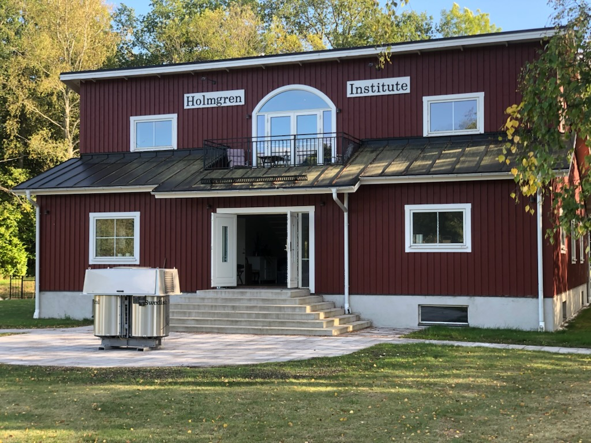

Roughly hundred years before the Internet there was a similar story for the interconnection of power grids. Today everybody is connected and dependent on this huge real time machine. A major disturbance of the supply-demand balance in this critical infrastructure can easily lead to a full standstill of society. The aim of all grid protection is to avoid that situation.
The world's first long distance power transfer from Lauffen power station to Frankfurt in 1891 decided the battle between AC and DC. While Edison's DC grids could transfer electrical power a couple of hundred meters, Dobrowolski's new 3-phase AC system could transfer electrical power over hundreds of kilometres. Both producers and consumers could easily connect to this revolutionary grid. Today large interconnected AC power systems cover all continents.
The idea to arrange three single phase AC voltages into a cyclo-symmetrical 3-phase system by connecting them in one common point - the neutral - was brilliant. It not only reduced power transfer losses immediately to half, but also created a possibility to arrange a rotating magnetic field by phase shifted AC voltages. This opened for a very robust design of electrical motors.
The story of the neutral could have ended here if it wasn't for the leakage currents. All AC system have inherent leakage currents to earth. These mainly capacitive currents are determined by voltage level, grid frequency, physical space and medium between phase and earth. In case of an earth fault all leakage currents close up through the fault and can cause considerable damage at the fault site.
In 1911 Torsten Holmgren suggested a summation of all three phase currents to separate leakage currents from load currents and make them detectable. This fundamental CT arrangement (Holmgenschaltung) is still the basis of all earth fault protection in high voltage systems.
The identification of the leakage currents or, to be more precise, the imbalance of these currents, is a clear indicator of an earth fault in the grid. From the beginning the leakage currents were relatively small and did not cause any direct problem to the transfer of power. But with the rapidly growing grids, also the leakage currents were growing, causing sustained arcing on overhead lines, which in turn often resulted in power outages due to line fractures.
Waldemar Petersen solved that problem in 1917. His "Arc Suppression Coil" - connected between neutral and earth - re-balanced the mainly capacitive leakage currents and drained the fault site from excessive fault currents, sufficiently to achieve self-extinction of the many flash over faults. The Petersen Coil again opened for the expansion of the AC grids into large transnational systems, further improving stability of the power balance.
The rapidly increasing demand for electrical power after WWII resulted in the world's first 400kV transmission line in Sweden in the early fifties. Despite its initial design for resonance grounding, this grounding concept had to be abandoned, because of huge uncompensated residual currents. At that time there was no working control scheme available to minimise these complex quantities.The new 400/230kV transmission level in Sweden was solidly grounded right from the beginning in 1954. Other countries followed that example.
Out of good reasons most sub-transmission and distribution grids below 230kV stayed resonance grounded. Higher fault rates and vulnerable radial distribution grid structures strongly talked for resonance grounding as the most cost efficient way to maintain power supply quality and public safety.
But the uncompensated residual fault current could still cause safety problems. A number of fatal accidents due to undetected high impedance line fracture faults finally resulted in new detection requirements in Sweden. A mandatory detection level of 20kOhm was introduced in the late seventies.
While the new detection requirement could easily be satisfied by improved monitoring of the neutral displacement, the localisation of such a fault was not possible with the existing protection schemes. A 20kOhm earth fault only produces 300mA fault current at 11kV level. Without locating at least the faulty feeder this kind of fault could only be handled by tripping the whole busbar.
The search for a more sensitive and selective protection scheme started in the mid-eighties at the Royal Institute of Technology in Stockholm. With the new tools, microprocessor and power electronic the underwriter developed a novel admittance differential scheme, capable of separating the actual fault current from other leakage currents in the zero-sequence system.
Once the actual fault current could be determined with high accuracy, the next step was to also eliminate the uncompensated residuals of the arc suppression coil by injecting an equal but opposite current in the neutral. With practically no fault current left and voltage injections at the fault site below touch voltage levels, there is no need for immediate tripping. Valuable time for fault localisation prior to fault clearance was gained.
The first pilot system of this novel protection was installed in 1992 on the island of Gotland. Today the "Ground Fault Neutralizer" is the recommended protection standard in bush fire prone areas of Australia and California, suffering from many bush fires caused by undetected line fracture faults.
Almost a side effect of the search for sensitive earth fault detection in overhead systems was the impact of the GFN on cable faults. For the first time re-striking cable faults could efficiently be stopped without supply interruption. This had a dramatic effect on the reliability of cable grids. Many critical industry grids worldwide have now been equipped with Ground Fault Neutralizers.
A second side effect of the GFN is its capability to control phase-to-ground voltages under normal grid operation. This new feature opens for systematic for-checking strategies, combining the GFN voltage control with online partial discharge monitoring.
One of the main worries for asset management are the aging cables in the larger city grids of the world. A reliable condition monitoring system could provide the tool to avoid massive premature cable replacements and base replacement decisions rather on the actual condition of the cable than age. This could save a lot of money.
The development of such a monitoring system is one of the R&D projects at the Holmgren Institute. Beside that, the Institute strives to keep its reputation as a centre of knowledge for neutral treatment and earth fault protection in high voltage networks. We offer our service to the industry by feasibility studies and special investigations. We also arrange regular workshops and seminars to transfer our know how to protection engineers and other experts.
Holmgren Institute
Klaus Winter
Chairman